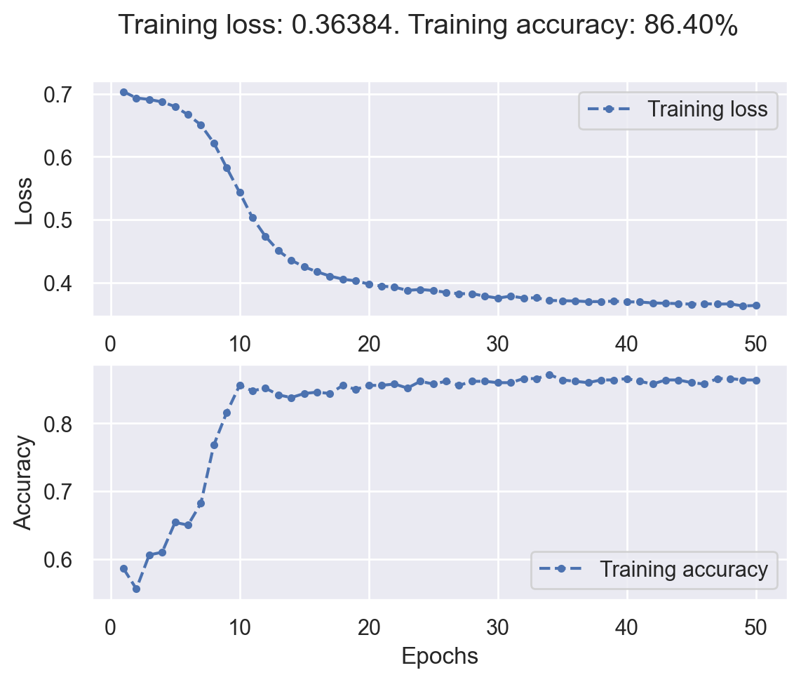
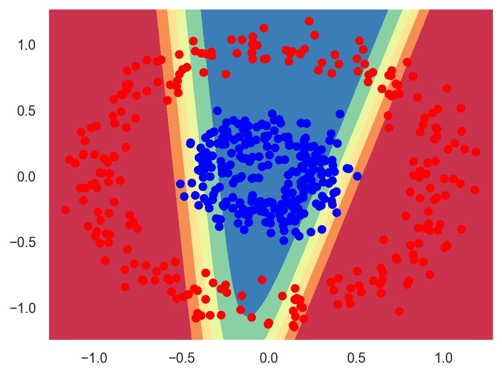

Artificial neural networks#
Warning
This chapter is under construction.
Environment setup#
import platform
import numpy as np
import matplotlib.pyplot as plt
from matplotlib.colors import ListedColormap
import seaborn as sns
import sklearn
from sklearn.datasets import make_circles
import torch
from torch import nn
from torch.utils.data import DataLoader
# Setup plots
# Include matplotlib graphs into the notebook, next to the code
# https://stackoverflow.com/a/43028034/2380880
%matplotlib inline
# Improve plot quality
%config InlineBackend.figure_format = "retina"
# Setup seaborn default theme
# http://seaborn.pydata.org/generated/seaborn.set_theme.html#seaborn.set_theme
sns.set_theme()
# Print environment info
print(f"Python version: {platform.python_version()}")
print(f"NumPy version: {np.__version__}")
print(f"scikit-learn version: {sklearn.__version__}")
print(f"PyTorch version: {torch.__version__}")
# PyTorch device configuration
if torch.cuda.is_available():
device = torch.device("cuda")
print(f"CUDA GPU {torch.cuda.get_device_name(0)} found :)")
# Performance issues exist with MPS backend
# elif torch.backends.mps.is_available():
# device = torch.device("mps")
# print("Metal GPU found :)")
else:
device = torch.device("cpu")
print("No GPU found, using CPU instead")
Python version: 3.11.1
NumPy version: 1.26.3
scikit-learn version: 1.3.2
PyTorch version: 2.0.1
No GPU found, using CPU instead
# Utility functions
def plot_dataset(x, y):
"""Plot a 2-dimensional dataset with associated classes"""
plt.figure()
plt.plot(x[y == 0, 0], x[y == 0, 1], "or", label=0)
plt.plot(x[y == 1, 0], x[y == 1, 1], "ob", label=1)
plt.legend()
plt.show()
def plot_decision_boundary(model, x, y):
"""Plot the frontier between classes for a 2-dimensional dataset"""
plt.figure()
# Set min and max values and give it some padding
x_min, x_max = x[:, 0].min() - 0.1, x[:, 0].max() + 0.1
y_min, y_max = x[:, 1].min() - 0.1, x[:, 1].max() + 0.1
h = 0.01
# Generate a grid of points with distance h between them
xx, yy = np.meshgrid(np.arange(x_min, x_max, h), np.arange(y_min, y_max, h))
# Compute model output for the whole grid
z = model(torch.from_numpy(np.c_[xx.ravel(), yy.ravel()]).float().to(device))
z = z.reshape(xx.shape)
# Convert PyTorch tensor to NumPy
zz = z.cpu().detach().numpy()
# Plot the contour and training examples
plt.contourf(xx, yy, zz, cmap=plt.colormaps.get_cmap("Spectral"))
cm_bright = ListedColormap(["#FF0000", "#0000FF"])
plt.scatter(x[:, 0], x[:, 1], c=y, cmap=cm_bright)
plt.show()
def plot_loss_acc(history):
"""Plot training loss and accuracy. Takes a Keras-like History object as parameter"""
loss_values = history["loss"]
recorded_epochs = range(1, len(loss_values) + 1)
fig, (ax1, ax2) = plt.subplots(2, 1)
ax1.plot(recorded_epochs, loss_values, ".--", label="Training loss")
ax1.set_ylabel("Loss")
ax1.legend()
acc_values = history["acc"]
ax2.plot(recorded_epochs, acc_values, ".--", label="Training accuracy")
ax2.set_xlabel("Epochs")
ax2.set_ylabel("Accuracy")
plt.legend()
final_loss = loss_values[-1]
final_acc = acc_values[-1]
fig.suptitle(
f"Training loss: {final_loss:.5f}. Training accuracy: {final_acc*100:.2f}%"
)
plt.show()
Fundamentals#
Online playground#

Activation functions#
Training process#
BInary classification#
Data generation#
# Generate 2D data (a large circle containing a smaller circle)
inputs, targets = make_circles(n_samples=500, noise=0.1, factor=0.3)
print(f"inputs: {inputs.shape}. targets: {targets.shape}")
plot_dataset(inputs, targets)
inputs: (500, 2). targets: (500,)
Hyperparameters#
# Rate of parameter change during gradient descent
learning_rate = 0.1
# An epoch is finished when all data samples have been presented to the model during training
n_epochs = 50
# Number of samples used for one gradient descent step during training
batch_size = 5
# Number of neurons on the hidden layer of the MLP
hidden_layer_size = 2
Data preparation#
# Create PyTorch tensors from NumPy tensors
x_train = torch.from_numpy(inputs).float().to(device)
# PyTorch loss function expects float results of shape (batch_size, 1) instead of (batch_size,)
# So we add a new axis and convert them to floats
y_train = torch.from_numpy(targets[:, np.newaxis]).float().to(device)
print(f"x_train: {x_train.shape}. y_train: {y_train.shape}")
x_train: torch.Size([500, 2]). y_train: torch.Size([500, 1])
# Load data as randomized batches for training
train_dataloader = DataLoader(
list(zip(x_train, y_train)), batch_size=batch_size, shuffle=True
)
# Number of samples
n_samples = len(train_dataloader.dataset)
# Number of batches in an epoch (= n_samples / batch_size, rounded up)
n_batches = len(train_dataloader)
Model definition#
# Create a MultiLayer Perceptron with 2 inputs and 1 output
# You may change its internal architecture:
# for example, try adding one neuron on the hidden layer and check training results
mlp_clf = nn.Sequential(
nn.Linear(2, hidden_layer_size),
nn.Tanh(),
nn.Linear(hidden_layer_size, 1),
nn.Sigmoid(),
).to(device)
print(mlp_clf)
n_parameters = sum(p.numel() for p in mlp_clf.parameters() if p.requires_grad)
print(f"Number of trainable parameters: {n_parameters}")
Sequential(
(0): Linear(in_features=2, out_features=2, bias=True)
(1): Tanh()
(2): Linear(in_features=2, out_features=1, bias=True)
(3): Sigmoid()
)
Number of trainable parameters: 9
Loss function#
# Binary Cross Entropy loss function
loss_fn = nn.BCELoss()
# Object storing training history
train_history = {"loss": [], "acc": []}
Model training#
# Main training loop
for epoch in range(n_epochs):
epoch_loss = 0
# Reset number of correct predictions for the current epoch
epoch_correct = 0
# Training loop for one data batch (i.e. one gradient descent step)
for x_batch, y_batch in train_dataloader:
# Forward pass: compute model output with current weights
y_pred_batch = mlp_clf(x_batch)
# Compute loss (comparison between expected and actual results)
loss = loss_fn(y_pred_batch, y_batch)
# Zero the gradients before running the backward pass
# Avoids accumulating gradients erroneously
mlp_clf.zero_grad()
# Backward pass (backprop): compute gradient of the loss w.r.t each model weight
loss.backward()
# Gradient descent step: update the weights in the opposite direction of their gradient
# no_grad() avoids tracking operations history, which would be useless here
with torch.no_grad():
for param in mlp_clf.parameters():
param -= learning_rate * param.grad
# Accumulate data for epoch metrics: loss and number of correct predictions
epoch_loss += loss.item()
epoch_correct += (torch.round(mlp_clf(x_batch)) == y_batch).float().sum().item()
# Compute epoch metrics
epoch_loss /= n_batches
epoch_acc = epoch_correct / n_samples
print(
f"Epoch [{(epoch + 1):3}/{n_epochs:3}]. Mean loss: {epoch_loss:.5f}. Accuracy: {epoch_acc * 100:.2f}%"
)
# Record epoch metrics for later plotting
train_history["loss"].append(epoch_loss)
train_history["acc"].append(epoch_acc)
print("Training complete!")
print(f"Total gradient descent steps: {n_epochs * n_batches}.")
Epoch [ 1/ 50]. Mean loss: 0.70334. Accuracy: 58.60%
Epoch [ 2/ 50]. Mean loss: 0.69329. Accuracy: 55.60%
Epoch [ 3/ 50]. Mean loss: 0.69090. Accuracy: 60.60%
Epoch [ 4/ 50]. Mean loss: 0.68698. Accuracy: 61.00%
Epoch [ 5/ 50]. Mean loss: 0.67962. Accuracy: 65.40%
Epoch [ 6/ 50]. Mean loss: 0.66668. Accuracy: 65.00%
Epoch [ 7/ 50]. Mean loss: 0.65045. Accuracy: 68.20%
Epoch [ 8/ 50]. Mean loss: 0.62199. Accuracy: 76.80%
Epoch [ 9/ 50]. Mean loss: 0.58244. Accuracy: 81.60%
Epoch [ 10/ 50]. Mean loss: 0.54336. Accuracy: 85.60%
Epoch [ 11/ 50]. Mean loss: 0.50302. Accuracy: 84.80%
Epoch [ 12/ 50]. Mean loss: 0.47359. Accuracy: 85.20%
Epoch [ 13/ 50]. Mean loss: 0.45086. Accuracy: 84.20%
Epoch [ 14/ 50]. Mean loss: 0.43572. Accuracy: 83.80%
Epoch [ 15/ 50]. Mean loss: 0.42522. Accuracy: 84.40%
Epoch [ 16/ 50]. Mean loss: 0.41733. Accuracy: 84.60%
Epoch [ 17/ 50]. Mean loss: 0.41048. Accuracy: 84.40%
Epoch [ 18/ 50]. Mean loss: 0.40564. Accuracy: 85.60%
Epoch [ 19/ 50]. Mean loss: 0.40289. Accuracy: 85.00%
Epoch [ 20/ 50]. Mean loss: 0.39787. Accuracy: 85.60%
Epoch [ 21/ 50]. Mean loss: 0.39458. Accuracy: 85.60%
Epoch [ 22/ 50]. Mean loss: 0.39302. Accuracy: 85.80%
Epoch [ 23/ 50]. Mean loss: 0.38777. Accuracy: 85.20%
Epoch [ 24/ 50]. Mean loss: 0.38930. Accuracy: 86.20%
Epoch [ 25/ 50]. Mean loss: 0.38757. Accuracy: 85.80%
Epoch [ 26/ 50]. Mean loss: 0.38472. Accuracy: 86.20%
Epoch [ 27/ 50]. Mean loss: 0.38254. Accuracy: 85.60%
Epoch [ 28/ 50]. Mean loss: 0.38263. Accuracy: 86.20%
Epoch [ 29/ 50]. Mean loss: 0.37868. Accuracy: 86.20%
Epoch [ 30/ 50]. Mean loss: 0.37558. Accuracy: 86.00%
Epoch [ 31/ 50]. Mean loss: 0.37868. Accuracy: 86.00%
Epoch [ 32/ 50]. Mean loss: 0.37574. Accuracy: 86.60%
Epoch [ 33/ 50]. Mean loss: 0.37600. Accuracy: 86.60%
Epoch [ 34/ 50]. Mean loss: 0.37188. Accuracy: 87.20%
Epoch [ 35/ 50]. Mean loss: 0.37142. Accuracy: 86.40%
Epoch [ 36/ 50]. Mean loss: 0.37101. Accuracy: 86.20%
Epoch [ 37/ 50]. Mean loss: 0.36997. Accuracy: 86.00%
Epoch [ 38/ 50]. Mean loss: 0.37003. Accuracy: 86.40%
Epoch [ 39/ 50]. Mean loss: 0.37070. Accuracy: 86.40%
Epoch [ 40/ 50]. Mean loss: 0.36967. Accuracy: 86.60%
Epoch [ 41/ 50]. Mean loss: 0.36936. Accuracy: 86.20%
Epoch [ 42/ 50]. Mean loss: 0.36788. Accuracy: 85.80%
Epoch [ 43/ 50]. Mean loss: 0.36735. Accuracy: 86.40%
Epoch [ 44/ 50]. Mean loss: 0.36684. Accuracy: 86.40%
Epoch [ 45/ 50]. Mean loss: 0.36592. Accuracy: 86.00%
Epoch [ 46/ 50]. Mean loss: 0.36660. Accuracy: 85.80%
Epoch [ 47/ 50]. Mean loss: 0.36606. Accuracy: 86.60%
Epoch [ 48/ 50]. Mean loss: 0.36634. Accuracy: 86.60%
Epoch [ 49/ 50]. Mean loss: 0.36312. Accuracy: 86.40%
Epoch [ 50/ 50]. Mean loss: 0.36384. Accuracy: 86.40%
Training complete!
Total gradient descent steps: 5000.
Training results#
plot_loss_acc(train_history)

plot_decision_boundary(mlp_clf, inputs, targets)
